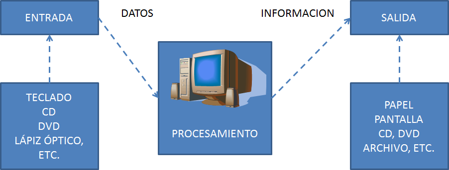
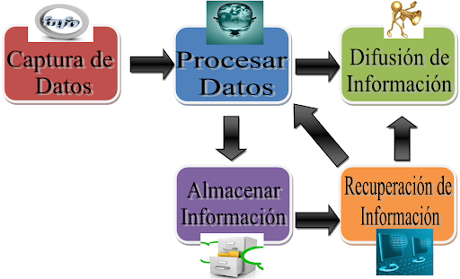

Procesamiento de Información: Es la capacidad del Sistema de Información para efectuar cálculos de acuerdo con una secuencia de operaciones preestablecida. Estos cálculos pueden efectuarse con datos introducidos recientemente en el sistema o bien con datos que están almacenados. Esta característica de los sistemas permite la transformación de datos fuente en información que puede ser utilizada para la toma de decisiones, lo que hace posible, entre otras cosas, que un tomador de decisiones genere una proyección financiera a partir de los datos que contiene un estado de resultados o un balance general de un año base.
Las siguientes imágenes muestran que el punto de convergencia o unión o puente de un sistema de información y todas las partes, es el PROCESAMIENTO.


Para ampliar el concepto anterior vamos a ver que es el procesamiento desde el CPU, para que podamos entender que es el procesamiento desde un punto de vista computacional.